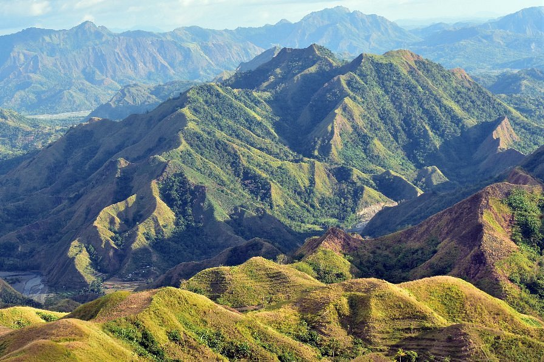
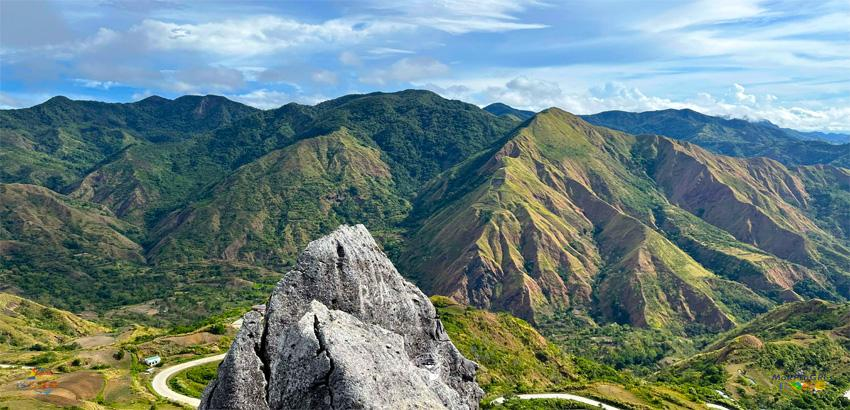
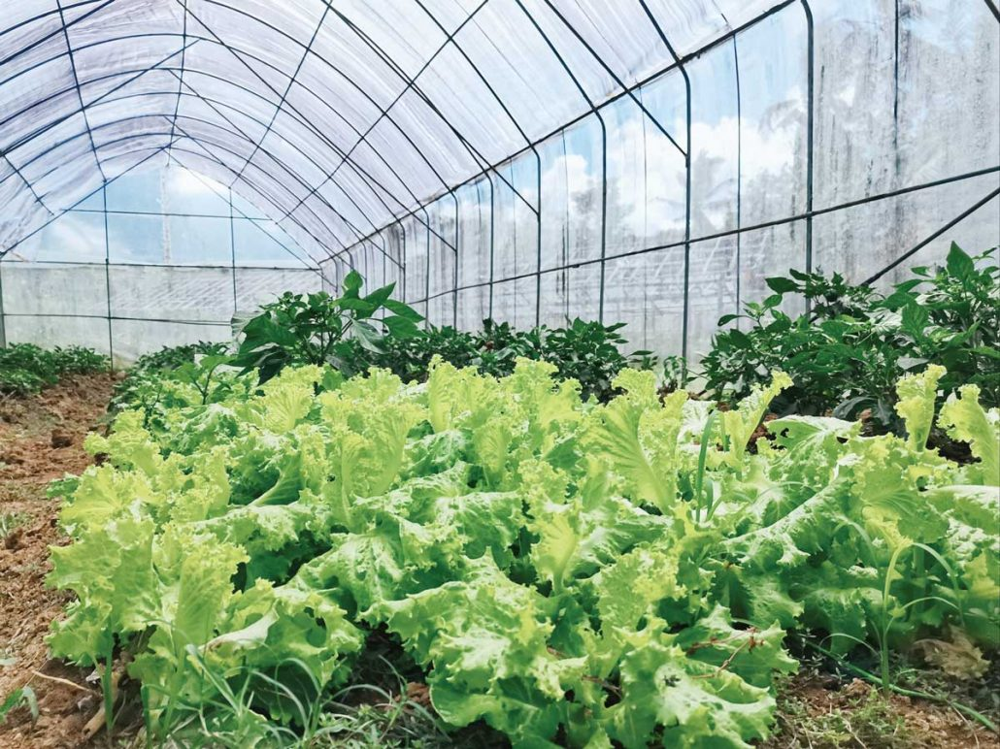

Mt. Tambara
Mt. Tambara is a mountain destination known for its
rocky summit and beautiful views of the surrounding
highlands. Visitors can enjoy a hike through natural
landscapes and take in the panoramic scenery.
Sunrise and sunset are wonderful times for landscape
photography, weather permitting.

Mt. Tambara — mountain views and highland scenery
Mountain Pass Road
The mountain pass offers a scenic journey through
winding roads, rolling hills, and lush highland
landscapes. It is a lovely route for travelers who
enjoy mountain views, photography, and exploring the
countryside between Tubungan and nearby upland areas.
Check local road conditions before traveling.

Mountain Pass Road — a journey through the highlands
Local Culture & Produce
Agriculture is an important part of life in the
highlands. Local farms grow vegetables and other crops
that support the community. Visitors can appreciate
the hardworking farmers, fresh produce, and peaceful
rural atmosphere while learning about local farming
practices and traditions.

Local farming — fresh vegetables and highland produce